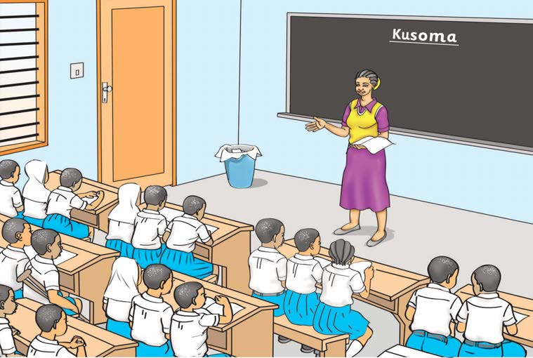

9.Soma sentensi hizi:
- Mwembe wetu umezaa maembe mengi.
- Mwewe amekamata kifaranga.
- Mwalimu amebeba mwavuli.
- Mama amenunua mwiko.
- Mtama mwingi umemwagika.
10.Soma habari hii:

Mwalimu Mwasi anatufundisha kusoma. Kila mwisho wa mwezi, anatoa jaribio la kusoma. Sisi sote tunajua kusoma. Mwisho wa mwaka, tutaenda likizo. Shule ikifunguliwa, tutaingia Darasa la Pili. Mwalimu Mwasi ni mwema sana. Tunampenda mwalimu wetu.